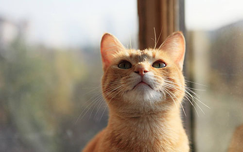
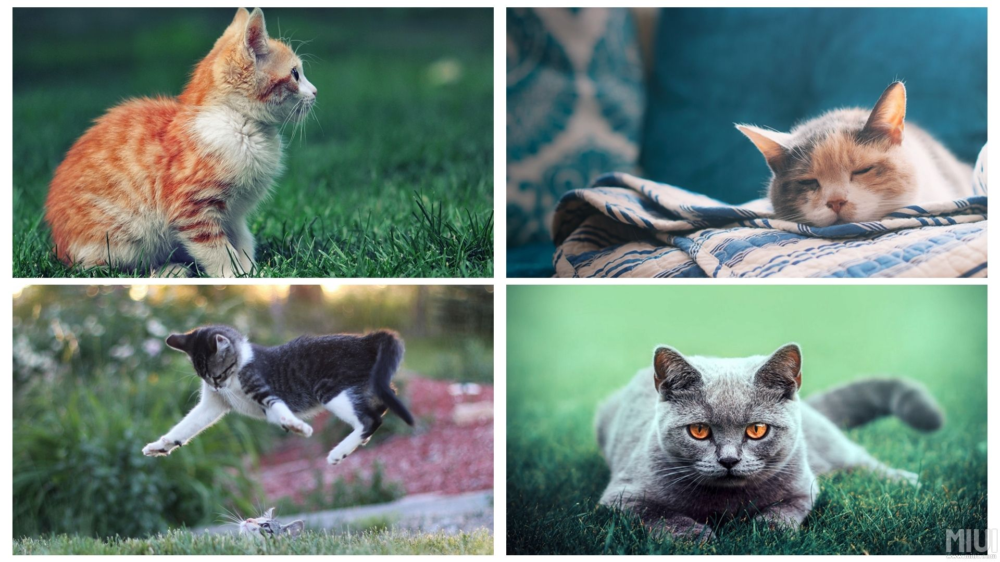
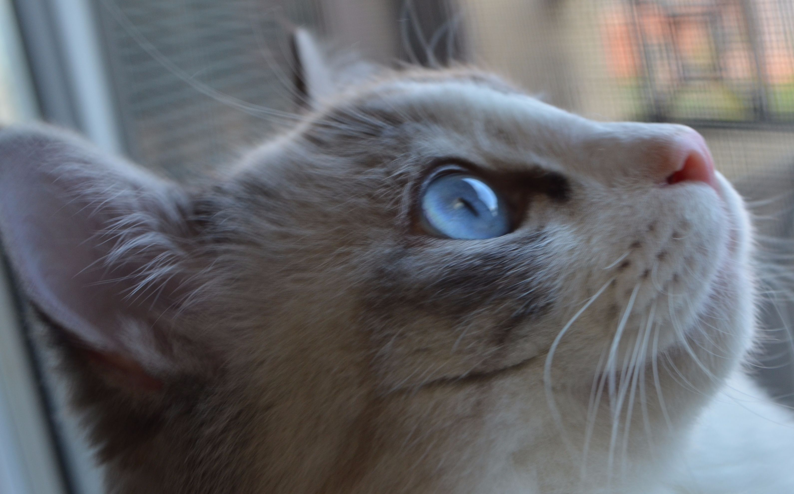
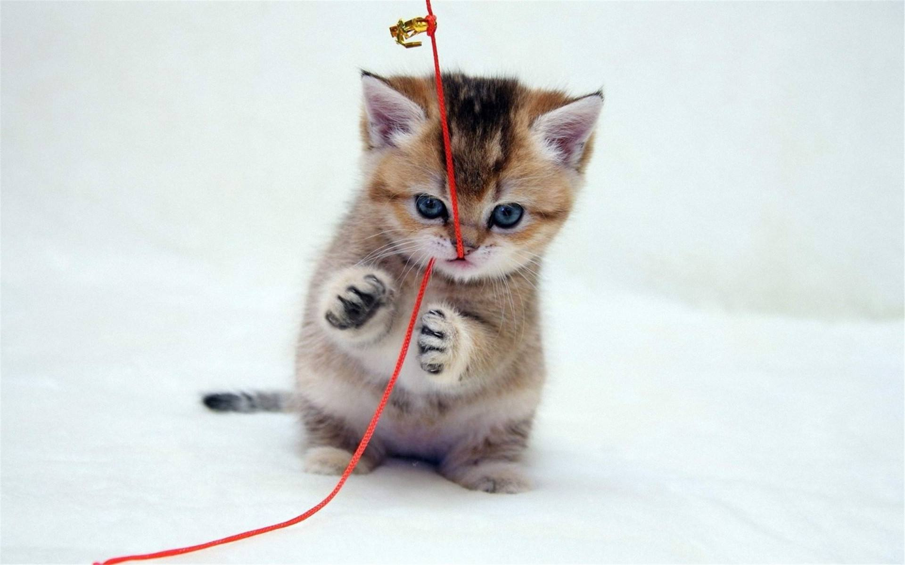

<!DOCTYPE html>
<html>

	<head>
		<meta charset="UTF-8">
		<title></title>
		<style type="text/css">
			* {
				margin: 0;
				padding: 0;
			}
			
			#count {
				width: 1000px;
				border: 5px solid black;
				margin: 5px auto;
				overflow: hidden;
			}
			
			#count ul {
				width: 240px;
				padding: 4px;
				float: left;
				list-style-type: none;
				border: 1px solid red;
			}
			
			#count ul img {
				width: 100%;
				height: 100%;
				/*background-color: gold;*/
				/*font-size: 100px;
				text-align: center;*/
				margin-bottom: 5px;
			}
		</style>
	</head>

	<body>
		<div id="count">
			<ul></ul>
			<ul></ul>
			<ul></ul>
			<ul></ul>
		</div>
	</body>
	<script type="text/javascript">
		//随机函数
		function randomnum(x, y) {
			var ran = Math.floor(Math.random() * (y - x + 1) + x);
			return ran;
		}
		//随机图片
		var picker = ['', '', '', '', '', '', '', '', '', '', '', '', '', '', '', '', '', '', '', '', '', '', '', '', '', '', '', '', '', ''];
		var nub = randomnum(0, picker.length);
		console.log(nub);
		//得到所有ul
		var content = document.getElementById("count");
		var uls = content.getElementsByTagName("ul");
		var arrh;
		for(var i = 0; i < 50; i++) {
		//创建li
		var li = document.createElement("li");
		li.style.height = randomnum(150, 300) + "px";
		//li.style.lineHeight = li.style.height;
		var nub = randomnum(0, picker.length - 1);
		li.innerHTML = picker[nub];
		//插入节点
		uls[0].appendChild(li);
		var index = 0; //记录最低高度ul所在位置
		for(var j = 0; j < uls.length; j++) {
			if(uls[j].offsetHeight < uls[index].offsetHeight) {
				index = j;
			}
			}
		//插入到最低ul中
		   uls[index].appendChild(li);
		}
	</script>

</html>